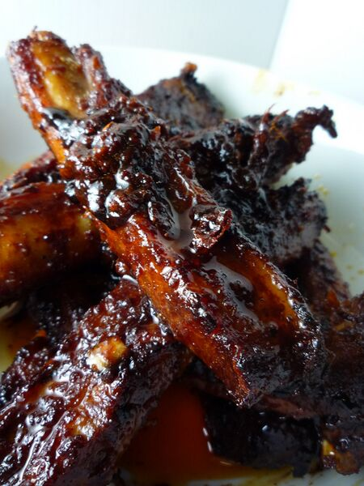

Home
Chinese Style Ribs

Description
A deceptively simple dish with bags of flavour. With a few Chinese pantry staples, some good ribs, and a couple of hours, you can create a crowd-pleasing meal with minimal effort!
Ingredients
- 680g pork spare ribs
- 1 tablespoon granulated white sugar
- 2 tablespoons light soy sauce
- 1 tablespoon dark soy sauce
- 1 tablespoon Shaoxing cooking wine
- 1 tablespoon rice vinegar
- 237ml water
- 1 tablespoon minced garlic
- 1 tablespoon minced ginger
- 1 green onion